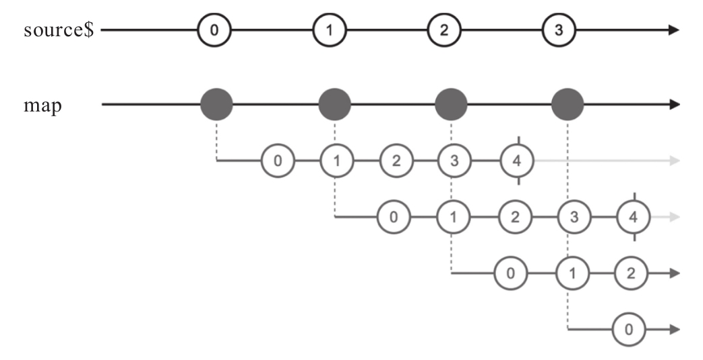

在前面已经介绍了map，map是RxJS中很好懂的一个操作符，因为有JavaScript原生的map来对应，接下来就介绍真正有RxJS特色的高阶map。你没有猜错，既然这些高阶map是有RxJS特色的map，意味着它们把Observable对象玩得更加出神入化。
所有高阶map的操作符都有一个函数参数project，但是和普通map不同，普通map只是把一个数据映射为另一个数据，而高阶map的函数参数project把一个数据映射为一个Observable对象。下面是一个这样的project函数例子：
const project = (value, index) => {
return Observable.interval(100).take(5);
}
project函数有两个参数，第一个参数value就是高阶map上游传下来的数据，第二个参数index是对应数据在上游数据流中的序号。在这个例子中，为了简单起见，并没有使用这两个参数，而是直接返回一个interval和take产生的Observable对象，间隔100毫秒依次产生数据0、1、2、3、4。
先来看普通的map使用这个project会产生什么样的结果，代码如下：
const source$ = Observable.interval(200); const result$ = source$.map(project);
对应的弹珠图如图8-11所示。

图8-11 map产生的高阶Observable对象
可以看到，在这里map产生的是一个高阶Observable对象，project返回的结果成为这个高阶Observable对象的每个内部Observable对象。
所谓高阶map，所做的事情就是比普通的map更进一步，不只是把project返回的结果丢给下游就完事，而是把每个内部Observable中的数据做组合，通俗一点说就是“砸平”，最后传给下游的依然是普通的一阶Observable对象。
RxJS提供的高阶map操作符有如下几个：
·concatMap
·mergeMap
·switchMap
·exhaustMap
这四个高阶map操作符的命名读者一定觉得眼熟，没错，它们的前缀concat、merge、switch和exhaust在第5章介绍合并类操作符的时候已经见识过，在介绍合并类操作符时，还介绍过concatAll和mergeAll（没有switchAll和exhaust），这两个操作符所做的事情就是把高阶Observable对象中的内部Observable组合起来，而switch和exhaust本身处理的也是高阶Observable。
所以，可以认为高阶map就是合并类操作符和map的完美结合，关系可以用下面的公式表示：
concatMap = map + concatAll mergeMap = map + mergeAll switchMap = map + switch exhaustMap = map + exhaust
所有xxxxMap名称模式的操作符，都是一个map加上一个“砸平”操作的组合，理解这样的本质之后，就容易理解高阶map了，其实就是把图8-11中map产生的高阶Observable利用对应的组合操作符合并为一阶的Observable对象。